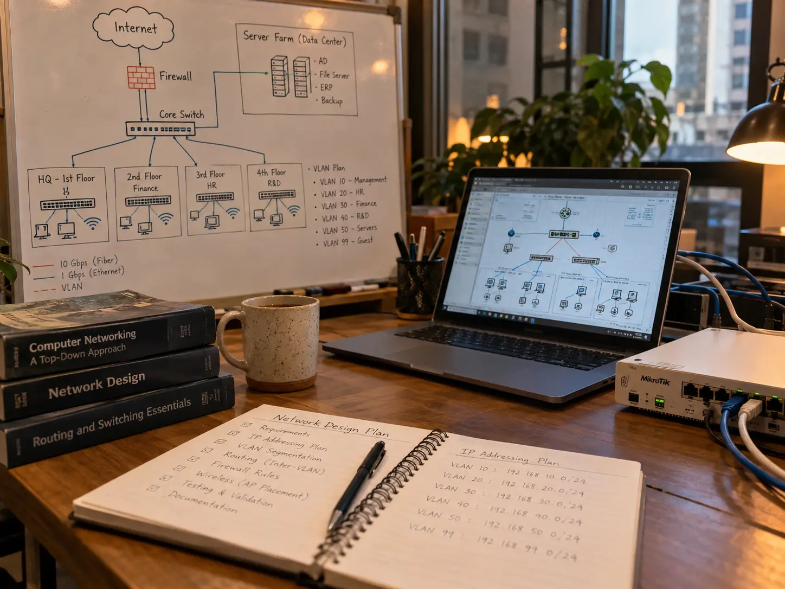
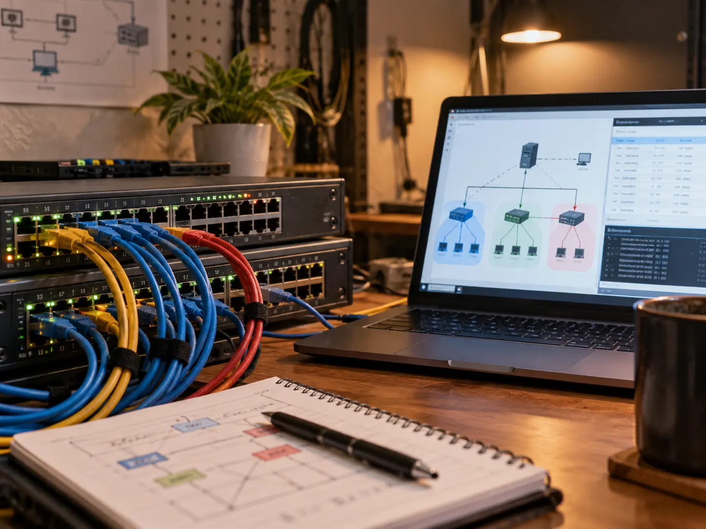
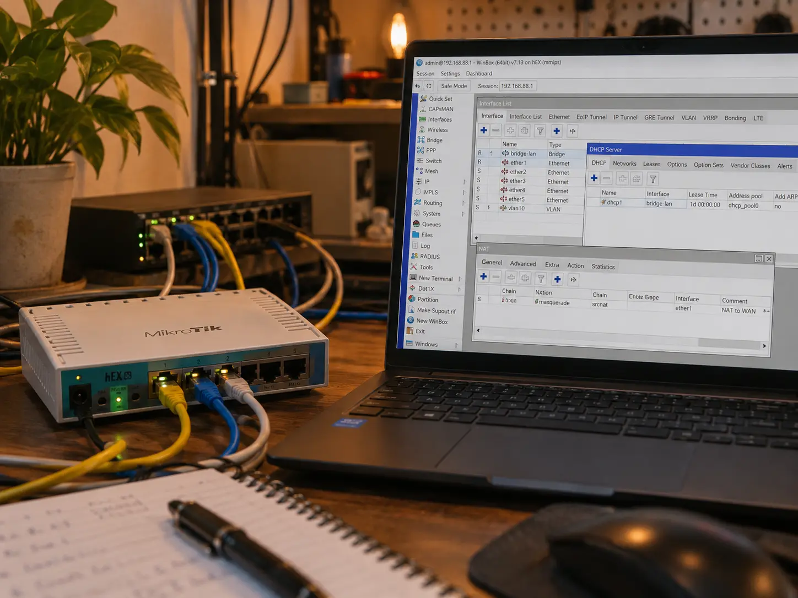
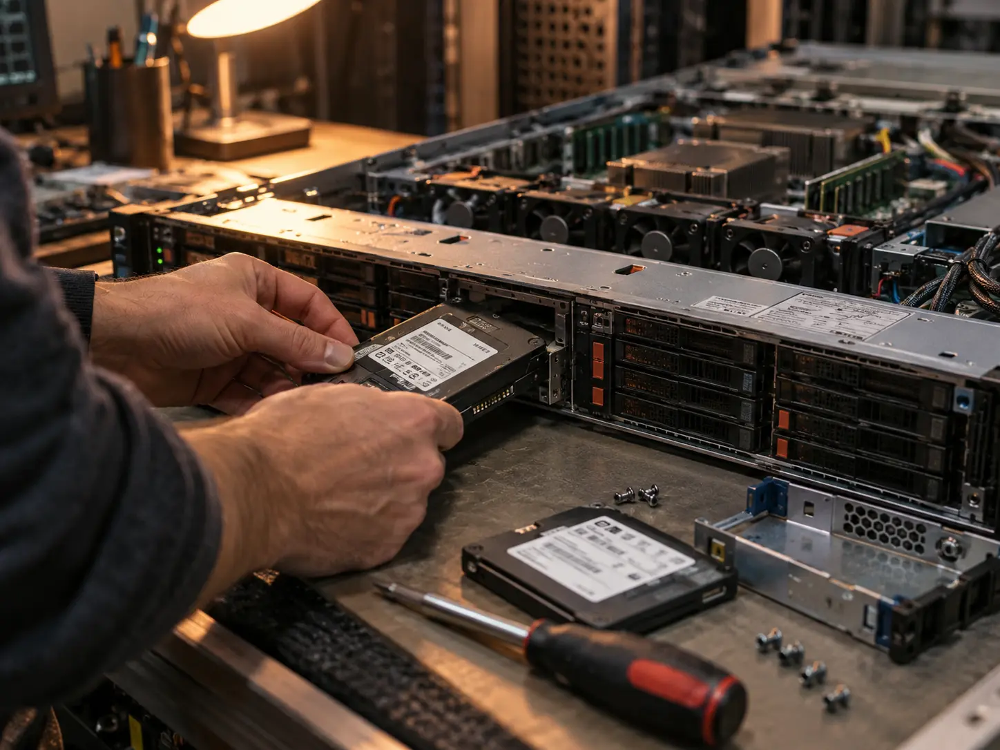
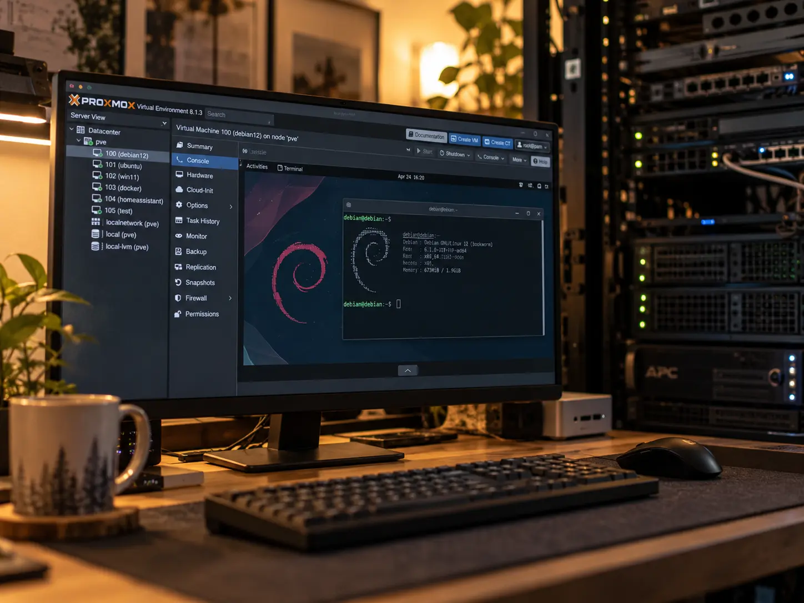
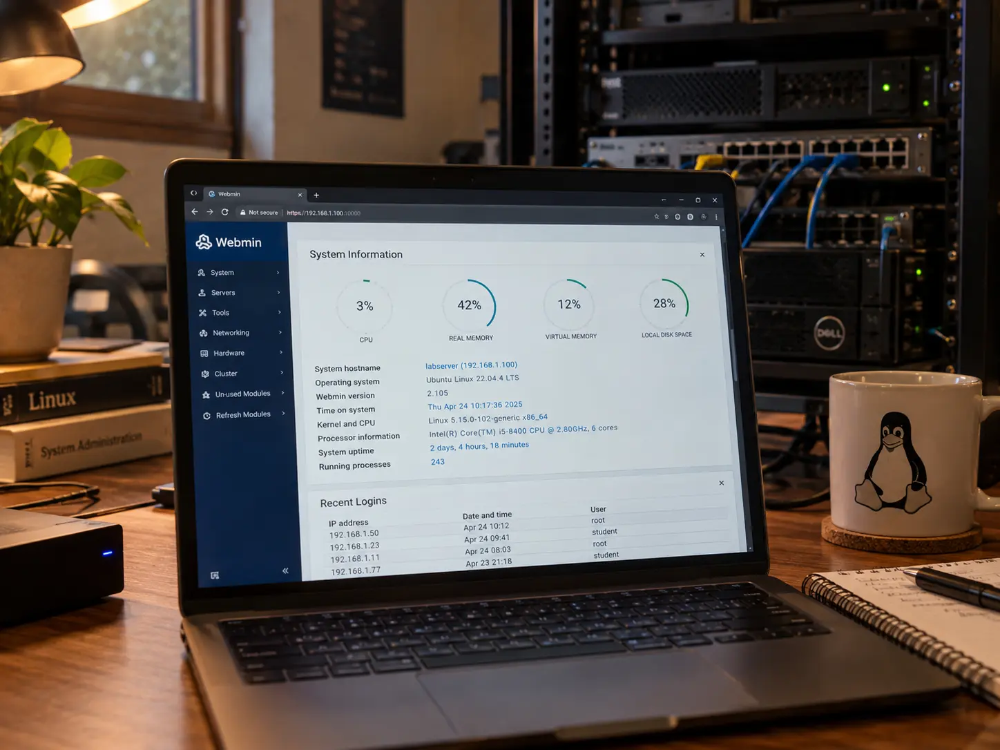

Arsip Tulisan
Blog
Catatan pembelajaran dan praktik saya di bidang Cyber Security, Networking, Server, dan Linux.

WireGuard, Tailscale & Zero Trust Networking
12 Oktober 2026
Mempelajari VPN modern menggunakan WireGuard dan Tailscale serta konsep Zero Trust untuk memahami akses jaringan yang lebih terkontrol.

Company Network Architecture Design
Mempelajari kondisi jaringan dan membuat rancangan topologi untuk memahami distribusi koneksi, segmentasi, dan struktur jaringan antar area.
VLAN & Centralized DHCP Simulation
Simulasi segmentasi jaringan menggunakan VLAN dan DHCP terpusat untuk memahami pembagian jaringan dan distribusi alamat IP.
MikroTik Network Configuration Lab
Praktik konfigurasi dasar MikroTik meliputi DHCP, NAT, bridge, VLAN, dan distribusi koneksi jaringan.
Server Hardware Upgrade & Deployment
Persiapan dan peningkatan perangkat server melalui pemasangan SSD, pengecekan hardware, dan persiapan sistem sebelum virtualisasi.
Proxmox Virtualization Server
Instalasi Proxmox VE dan praktik pembuatan virtual machine Debian untuk memahami dasar virtualisasi server.IOC & Threat Intelligence Analysis
Pembelajaran analisis Indicator of Compromise dan pemanfaatan threat intelligence untuk memahami indikator aktivitas mencurigakan.